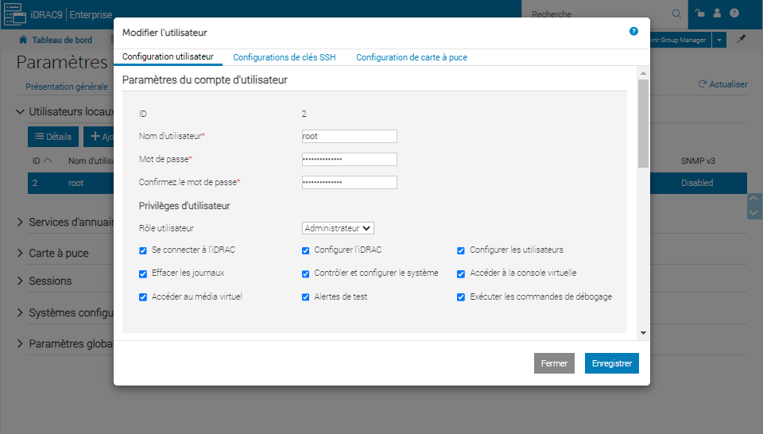
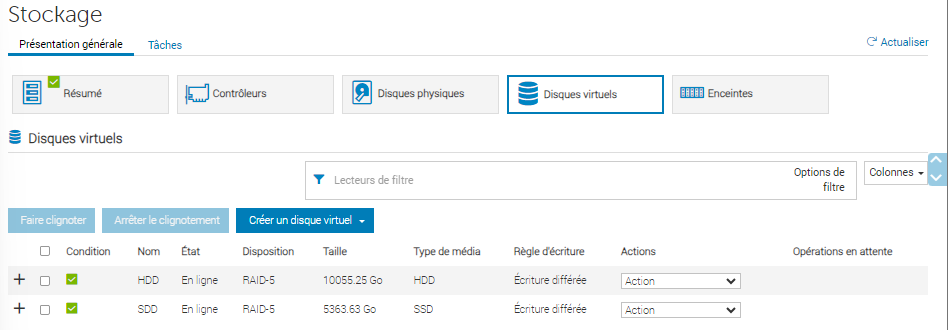
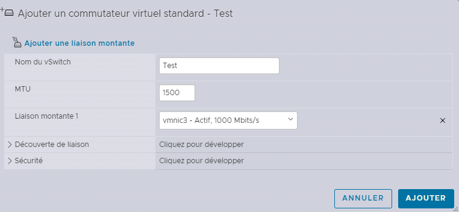
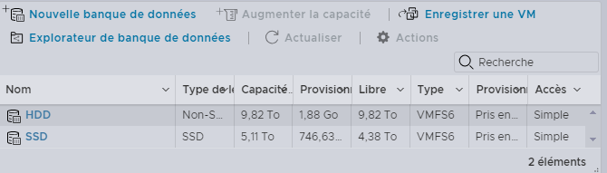
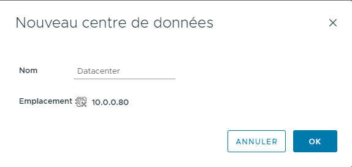
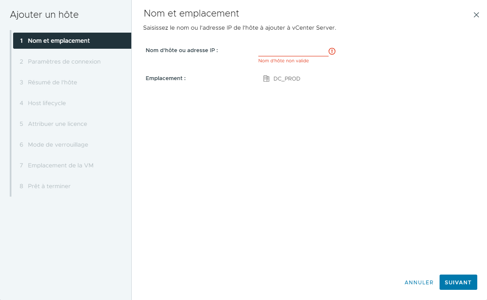
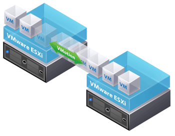

- Préparation du serveur: Assurez-vous que le serveur est correctement installé dans son rack, connecté à l'alimentation et au réseau, et que tous les composants hardware nécessaires sont installés (disques durs, cartes réseau, etc.).
2. Installation et configuration de iDRAC (BIOS)
iDRAC (Integrated Dell Remote Access Controller) permet de gérer à distance votre serveur Dell.
- Accès à iDRAC: Au démarrage du serveur, appuyez sur la touche F2 pour accéder au BIOS et configurez iDRAC.
- 2.1 Modification de l'IP: Configurez l'adresse IP de iDRAC pour permettre une gestion à distance.
-
2.2 Prise du serveur a distance avec son IP
-
2.3 Modification de MDP: Sécurisez l'accès en modifiant le mot de passe par défaut. Dans Paramètres de l'IDRAC -> Utilisateur -> Modifier. Changer le MDP en respectant la politique de sécuriter

-
2.4 Mise en RAID5: Dans l'interface graphique aller dans Stockage -> Disques virtuels -> Créer un disque virtuel -> Sélectionnez les disques à inclure dans le volume RAID (1 RAID5 SSD et 1 RAID5 HDD) puis valider.

3. Installation ESXi via clé BOOTABLE
- Création de la clé USB bootable: Téléchargez l'image ISO d'ESXi depuis le site de VMware et utilisez un outil tel que Rufus pour créer une clé USB bootable.
- Installation d'ESXi: Avec la clé USB connectée, redémarrez le serveur et sélectionnez la clé USB comme périphérique de démarrage. Suivez les instructions à l'écran pour installer ESXi.
- 3.1 Configuration de ESXi
-
Configuration de vSwitch: Connectez-vous à l'interface de gestion d'ESXi et configurez les vSwitches pour séparer le trafic réseau selon vos besoins (gestion, réseaux à part, stockage, etc.).

-
Création de Datastores: Utilisez le stockage (RAID5) créer dans l'IDRAC pour que l'ESXi les utilise pour stocker les fichiers de machines virtuelles.

4. Configuration vSphere 8.0
- Installation de vSphere: Créer une VM(bureautique) sur le ESXI et lancer l'exécuter qui se trouve dans l'ISO de vSphere, ensuite suivre le programme d'installation avec les paramètres voulu. Lui resegner Nom d'hôte, Nom d'utilisateru, Mot de passe. Ensuite lui lié un dossier et une ressource de calcule de l'ESXI et une banque de donné.
- Pour finir il sufie de lancer la VM créer par l'ISO et supprimer la VM(bureautique) qui ne sert plus a rien.
tuto détailler: https://www.youtube.com/watch?v=KpuTrlXnBuo
Connexion à vSphere Web Client
- Ouvrez un navigateur Web et accédez à l'URL de vSphere Web Client.
- Entrez vos identifiants pour vous connecter à vSphere.
Création d'un Centre de Données :
- Dans le volet de navigation de vSphere Web Client, sélectionnez l'inventaire.
- Cliquez avec le bouton droit de la souris sur le Datacenter où vous souhaitez créer le centre de données.
- Choisissez "New Datacenter" et nommez-le selon vos préférences.

Ajout d'un Hôte ESXi au Centre de Données :
- Dans vSphere Web Client, sélectionnez le centre de données que vous avez créé.
- Cliquez avec le bouton droit de la souris sur le centre de données et choisissez "Add Host".
- Entrez l'adresse IP ou le nom d'hôte de l'hôte ESXi que vous souhaitez ajouter.
- Entrez les informations d'identification de l'hôte ESXi et terminez le processus d'ajout.

5. Migration de VMs à chaud
Nous utilisont vSphere pour centraliser et controller nos ESXI un de ces outils clés est vMotion
- Utilisation de vMotion: VMware vMotion permet de déplacer des VMs d'un serveur à un autre sans interruption de service. Configurez vMotion sur vos hôtes ESXi et utilisez le vCenter Server pour initier la migration.
Pour cela aller dans vSphere -> clic droit sur une VM -> Puis appuyer sur migrer. Il ne reste plus qu'a choisir le nouveau serveur.
La migration ce fait avec les VMs a chaud et il ne doit pas y avoir de perte pendant le transfère
